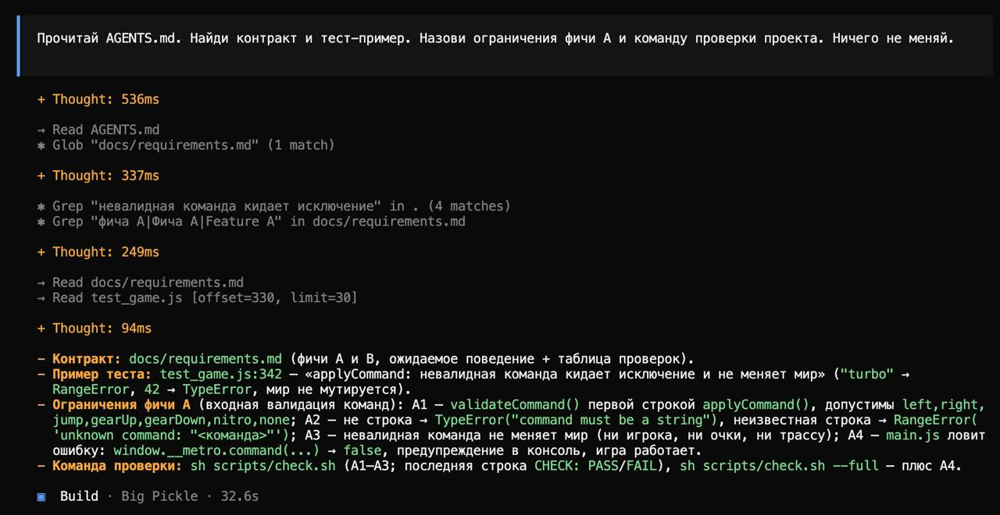
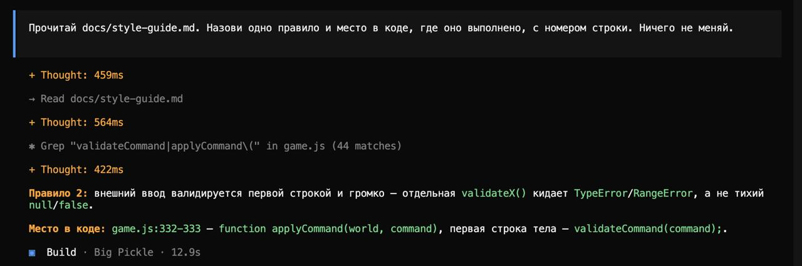

AGENTS.md — правила проекта применялся
Агент в каждом новом чате начинает с нуля, и OpenCode автоматически даёт ему этот файл. В нём: где контракт, какой командой проверять, что нельзя трогать (git, тесты фичи A, runner), структура проекта, skills и MCP.
- AGENTS.md — правила
- docs/requirements.md — контракт фич A и B (требование → тест)
- docs/style-guide.md — 5 правил кода, у каждого пример в коде и проверка
Применение: фичу B агент делал в новом чате в отдельном worktree — прочитал AGENTS.md,
сам нашёл контракт, запускал sh scripts/check.sh --full и не делал коммитов.
Демо · правила«Прочитай AGENTS.md. Найди контракт и тест-пример. Назови ограничения фичи A и команду проверки проекта. Ничего не меняй.»
Агент прочитал AGENTS.md, по ссылкам из него нашёл docs/requirements.md и тест
test_game.js:342, перечислил требования A1–A4 и назвал реальную команду проверки
sh scripts/check.sh (и --full для A4).

Демо · style guide«Прочитай docs/style-guide.md. Назови одно правило и место в коде, где оно выполнено, с номером строки. Ничего не меняй.»
Правило 2 «внешний ввод валидируется первой строкой и громко» → game.js:332–333,
первая строка applyCommand() — validateCommand(command).
